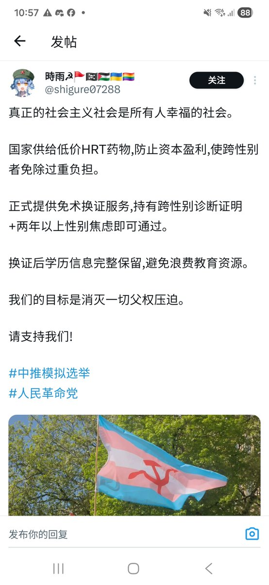
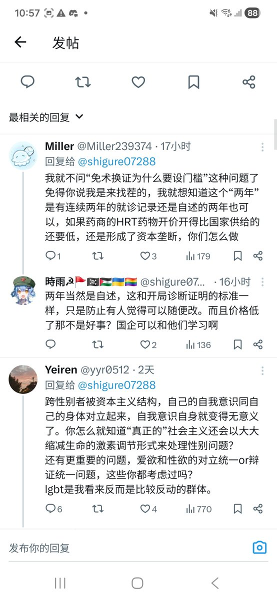

“认为lgbt是比较反动的群体”
槽点太多
https://t.co/y9A7bhpxZ9 不是一个组织的名字。
2.“反动”这帽子真大啊，明明是指反对进步，希望恢复已经崩溃的旧剥削制度，lgbt的支持者和以上哪点沾边？他们因为自身社会地位的问题，往往比一般人更支持变革。

槽点太多
https://t.co/y9A7bhpxZ9 不是一个组织的名字。
2.“反动”这帽子真大啊，明明是指反对进步，希望恢复已经崩溃的旧剥削制度，lgbt的支持者和以上哪点沾边？他们因为自身社会地位的问题，往往比一般人更支持变革。


真无语，西左觉得LGBTQ是左，中左觉得LGBTQ是资本主义阴谋😅😅😅😅😅甚至还自述性别焦虑😅😅😅意思就是我想变就变呗
甚至政府低价供应😅😅😅低价供应的前提是货币经济存在，他宁可跟资本主义同流合污，也不愿意搞凭票供应😁😁😁什么假左 https://t.co/oBeoQNGPsj
甚至政府低价供应😅😅😅低价供应的前提是货币经济存在，他宁可跟资本主义同流合污，也不愿意搞凭票供应😁😁😁什么假左 https://t.co/oBeoQNGPsj